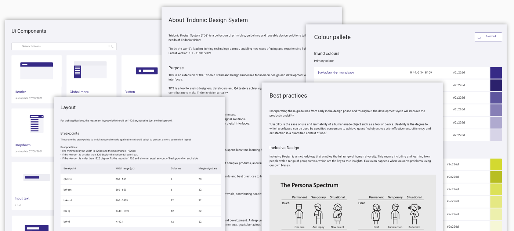

Tridonic Design System
Unifying User Experiences for IoT
An initiative to standardize experiences and enhance product development efficiency across Tridonic's Smart Lighting solutions.
Context & Contribution
As Tridonic rapidly expanded its portfolio of smart lighting and IoT solutions, a critical challenge emerged: inconsistent digital product designs. Disparate development across various teams led to a fragmented user experience for our IoT and lighting applications, hampering both end-user adoption and internal development efficiency. Recognizing this escalating technical and design debt, a unified digital strategy was essential to enhance the "Internet of Light" vision. My Contribution:
- Conducted research to define and validate inconsistencies across Tridonic's products.
- Defined the vision, strategy and roadmap for the Tridonic Design System (TDS).
- Secured buy-in and alignment across product and engineering teams.
- Drove evangelization, adoption and collaboration across internal stakeholders.
Discovery & Key Insights
Through comprehensive audits and internal stakeholder research, we uncovered key challenges and opportunities:
- Quantified Inconsistency: Identified over 200 unique UI components across 15+ IoT and lighting applications, revealing significant design and technical debt.
- Operational Bottlenecks: Internal designers spent ~20% of their time on manual consistency updates, and developers expressed frustration with non-standardized design specifications.
- Strategic Imperatives: Confirmed that standardization was crucial for reducing development costs, accelerating time-to-market, enhancing user adoption and trust, fostering a shared design language, and ensuring scalability for future growth.
Vision & Strategy
TDS's vision was to be the foundational framework illuminating all Tridonic digital products, directly addressing the fragmented user experience and escalating technical debt identified in our initial audit. It aimed to ensure a consistent, intuitive, and high-quality user experience across the entire ecosystem, drastically reducing development costs and accelerating time-to-market.
TDS was designed to be a living system, fostering efficiency and user-centricity, scaling seamlessly with Tridonic's rapid growth in smart lighting and IoT, and ultimately becoming a central pillar of our "Internet of Light" strategy.
Delivery & Execution
The TDS was designed for robust scalability, directly addressing inconsistencies in our IoT and lighting product development:
- Reusable Component Library: A comprehensive, code-based library of UI components, built with modularity for reusability across diverse IoT applications, significantly reducing technical debt and accelerating development.
- Design Tokens as Single Source of Truth: Centralized design decisions (colors, typography, spacing) into abstract variables, enabling consistent theming across web and mobile IoT interfaces and streamlining global updates via a Design System Tokens Generator.
- Streamlined Code Generation: Facilitated direct code generation from design specifications, drastically reducing manual effort in the design-to-development hand-off for complex IoT interfaces.

Achievements & Impact
Key Takeaways
Design Systems as Strategic Products
TDS is a vital internal product with its own users, roadmap, and ROI, ensuring its sustainability and value within the organization.
Evangelization is a Core PM Function
Active promotion and demonstrating tangible value are crucial for successful organizational adoption and sustained momentum.
The Compounding ROI of Consistency
Investing in consistency upfront yields significant returns in efficiency, scalability, user satisfaction, and overall brand strength across digital products.
Get in touch if you want a deeper dive or to discuss how my skills and expertise can
help on your challenges.
More about me on LinkedIn. Let's connect!